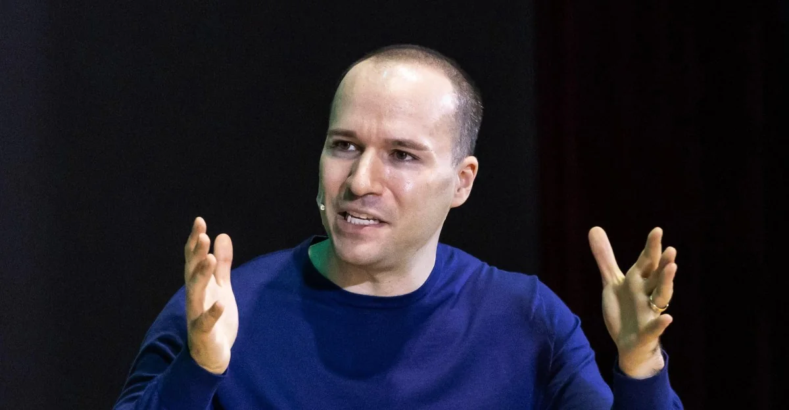
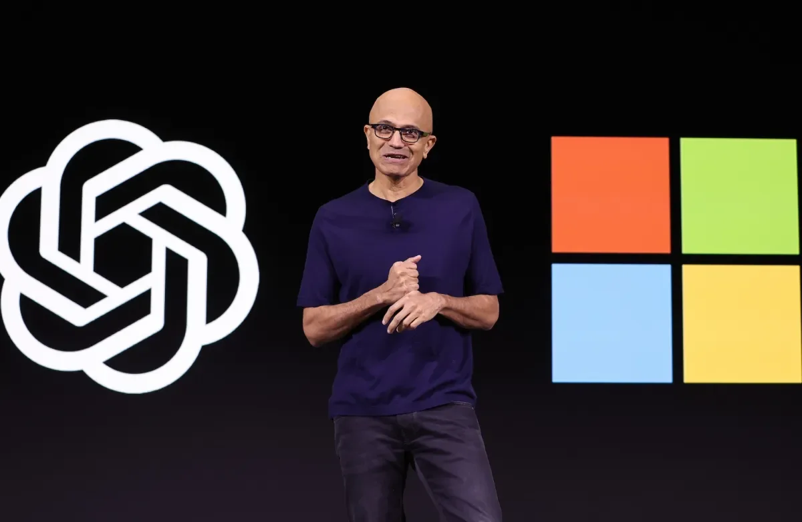

01
微软确认Copilot超级应用今年到来
微软计划将Copilot整合为一款超级应用，统一所有AI助手功能。

微软今天证实，其AI助手Copilot将升级为一款“超级应用”，并计划在今年内推出。这一消息由微软官方在The Verge的报道中确认。此前，Thurrott.com和WION在5月底就曾报道微软正在开发一款超级应用，旨在将所有AI助手整合到一起。Fortune则在6月底报道，微软CEO萨提亚·纳德拉正委托一位33岁的高管来修复Copilot的问题。
所谓超级应用，是指一款集成了多种功能的应用，用户无需切换不同App即可完成聊天、搜索、办公、购物等任务。微软此举显然是效仿微信、支付宝等超级应用模式，但以AI为核心驱动。目前Copilot已嵌入Windows、Office、Edge等产品，但分散在不同入口。新超级应用将统一这些能力，并可能加入更多第三方服务。
从技术门槛看，整合多模态AI模型（文本、图像、语音）和跨平台服务是主要挑战。微软需要确保不同功能模块的协同，同时保持低延迟和高准确性。成本方面，大规模推理需要大量算力，但微软有Azure云和自研芯片支撑。
这一变化对产业的影响：赢家是微软，它有望通过超级应用巩固其在企业市场和消费市场的AI入口地位。输家可能是独立的AI助手应用，如ChatGPT、谷歌Gemini等，它们将面临微软生态捆绑的竞争。对普通人来说，未来可能只需一个应用就能完成工作、生活和娱乐中的大部分AI交互，但数据隐私和平台依赖风险也会增加。
伊恩的观察
微软的超级应用战略将AI从工具升级为平台，普通人应关注其整合后的实际体验，并留意数据集中带来的隐私问题。
02
xAI紧急阻止明尼苏达州反AI脱衣应用法
xAI is suing Minnesota Attorney General Keith Ellison over a law passed back in May that broadly targets "nudification" apps, claiming that the statute's punitive provisions leave the company with "no practical choice but to restrict Grok Imagine's image-editing features in various ways." The law, the company argues, violates the First Amendment. Back in January, […]
xAI正在最后一刻努力阻止明尼苏达州一项针对AI“脱衣”应用的法律生效。这项法律旨在禁止通过AI技术生成或传播虚假裸体图像，即所谓的“nudification”应用。xAI认为该法律过于宽泛，可能影响其AI模型Grok的合法使用。
该法律的变化在于：明尼苏达州成为美国首批专门针对AI生成裸体内容立法的州之一。此前，这类内容主要受现有色情报复或儿童色情法律约束，但新法直接针对AI工具本身。xAI的诉讼焦点是，法律可能要求平台对用户生成内容进行审查，从而侵犯言论自由。
技术门槛方面，检测AI生成的裸体图像本身是一个技术难题，现有工具误报率较高。成本方面，合规审查将增加运营支出。
这一事件的赢家是隐私保护倡导者，他们推动了对AI滥用的监管。输家是xAI和其他AI公司，它们可能面临更严格的审查。对普通人来说，这项法律有助于保护个人免受AI生成的虚假色情内容侵害，但也可能限制AI的创造力。
伊恩的观察
AI监管正在加速，普通人应了解当地法律对AI使用的限制，同时警惕AI生成虚假内容的潜在危害。
03
扎克伯格计划大力推动个人AI代理
Meta is all-in on AI, and sometime soon, the company is going to make a big push into personal AI agents that can do things on your behalf. On Wednesday's Q2 2026 earnings call, CEO Mark Zuckerberg previewed a high-level vision of how the company is thinking about personal agents and what it will do […]
马克·扎克伯格在Meta第二季度财报电话会议上宣布，计划大力推动个人AI代理。这些代理将能够代表用户执行任务，如预订餐厅、管理日程、购物等。此前，Financial Times在5月报道Meta计划为消费者推出高级“代理型”AI助手，而YourStory.com在7月初指出Meta的AI雄心面临重大延迟。
个人AI代理与现有AI助手的区别在于：代理具有主动性和自主决策能力，而不仅仅是回答问题。例如，代理可以监控用户的日历，主动建议会议时间并发送邀请。Meta的目标是将代理整合到其社交平台和硬件设备中，如Facebook、Instagram和Ray-Ban智能眼镜。
技术门槛很高：代理需要理解复杂上下文、进行多步推理，并安全地访问用户数据。成本方面，训练和运行代理模型需要大量算力，Meta正在投资自研芯片和基础设施。
赢家是Meta，它有望通过社交网络数据优势打造个性化代理。输家可能是现有虚拟助手如Siri、Alexa，它们缺乏社交图谱。对普通人来说，个人AI代理能大幅提升效率，但隐私和安全风险不容忽视——代理需要访问大量个人数据。
伊恩的观察
Meta的个人AI代理将重新定义人机交互，普通人应权衡便利性与隐私风险，谨慎授权数据访问。
04
OpenAI总裁称正在打造AI设备家族
In an interview with our friend Joanna Stern on her YouTube channel, OpenAI president Greg Brockman said the company is working on a "family of devices" for interacting with its AI models. However, Brockman didn't confirm reports that one of those devices is a smart speaker OpenAI's rumored to be launching in 2027, or earlier […]

OpenAI总裁格雷格·布罗克曼在接受The Verge采访时透露，公司正在“构建一系列设备”来承载其AI聊天机器人。这标志着OpenAI从纯软件公司向软硬件一体化转型。此前，The Guardian在2025年8月报道了ChatGPT被指控鼓励用户自杀的诉讼，凸显了AI安全风险。
OpenAI的硬件计划并非首次传闻，但布罗克曼的确认是官方首次明确表态。这些设备可能包括智能音箱、可穿戴设备或专用AI终端，旨在提供比手机更自然的交互体验。与苹果、谷歌等竞争对手不同，OpenAI的硬件将深度集成其GPT模型，并可能采用定制芯片。
技术门槛极高：硬件设计、供应链管理、散热、功耗等都是挑战。成本方面，研发和制造需要数十亿美元投入。OpenAI近期估值超过千亿美元，有资金实力，但硬件业务利润率低，风险大。
赢家是OpenAI，如果成功，它将拥有AI生态的硬件入口。输家可能是现有智能设备厂商，如亚马逊Echo、谷歌Nest。对普通人来说，专用AI设备可能提供更沉浸的体验，但需要接受新生态和潜在的高价格。
伊恩的观察
OpenAI的硬件计划将AI竞争从软件延伸到物理世界，普通人可关注其产品形态，但不必急于购买第一代产品。
05
微软从Anthropic投资中录得32亿美元收益
When Microsoft reported killer fourth-quarter earnings for its fiscal 2026 year (which ended June 30), it tucked in an interesting little tidbit about how its investments in the two biggest, and competing, AI labs are doing.

微软在最新财报中披露，其对AI公司Anthropic的投资带来了约相关数量亿美元的账面收益。然而，对OpenAI的投资则表现混合。TechCrunch报道了这一消息。
Anthropic是Claude模型开发商，微软在本年度向其投资数十亿美元。这笔投资如今增值显著，反映了AI赛道的资本热度。相比之下，微软对OpenAI的早期投资虽然巨大，但OpenAI近期面临商业化挑战和领导层变动，收益不如预期。
这一变化表明，AI投资并非稳赚不赔。微软通过分散投资降低了风险：Anthropic专注于安全AI，OpenAI则追求通用人工智能。技术门槛上，两家公司都需要持续烧钱研发，而商业化落地是最大考验。
赢家是Anthropic，其估值和影响力因微软背书而提升。输家可能是OpenAI，其与微软的关系变得复杂。对普通人来说，AI公司的财务表现间接影响产品定价和可用性，但短期内用户无需担心。
伊恩的观察
微软的AI投资策略显示，分散押注是降低风险的关键。普通人应理性看待AI公司的估值，关注实际产品而非资本故事。
无障碍文字记录
伊恩 今天聊一个很清晰的趋势：AI 巨头们的战略正在迅速分化。微软想把 Copilot 做成一个“超级应用”，Meta 想让你拥有一个“个人 AI 代理”，OpenAI 干脆要自己造硬件，而 xAI 则在法庭上跟一个州的法律死磕。这些动作看似分散，但背后都指向同一个问题：AI 到底应该以什么形态进入我们的生活？
伊恩 微软今年要推一个Copilot“超级应用”，这是The Verge从微软官方确认的消息。所谓超级应用，就是把聊天、支付、办公、搜索等各种功能塞进一个App里，这个概念最早来自微信和东南亚的Grab。微软的Copilot超级应用，核心是把所有AI助手整合到一起：个人版Copilot、企业版Microsoft 365 Copilot、开发者工具、甚至Bing Chat，全部放进一个入口。
这意味着什么？以前你用Copilot写文档要打开Word，用Bing Chat要开浏览器，用GitHub Copilot要进IDE——现在一个App全搞定。微软的逻辑很清楚：AI能力本身是功能，但功能很容易被替代；只有把功能做成平台，才能产生粘性。想象一下，你早上用Copilot安排日程，工作中让它写周报，晚上用它规划旅行路线，所有数据都在一个生态里流转。
微软的底气来自它的企业用户基础。全球有数亿Office 365用户，如果这些用户都迁移到Copilot超级应用，那微软就牢牢锁住了企业AI市场。但挑战也很明显：超级应用需要打通不同后端服务，统一数据模型，还要处理隐私合规。微信的成功建立在社交关系链上，微软没有这个基础。它更多是“工具聚合”，而非“生活聚合”。
对普通人来说，好处是方便——一个App解决所有AI需求，不用记多个账号和界面。坏处是数据更集中，隐私风险更高。微软必须证明它能保护用户数据，尤其是在企业场景下。
我的判断是：微软做超级应用，战略上正确，但执行难度极大。它需要让用户觉得“一个App就够了”，而不是“一个App太乱了”。如果成功，微软会成为AI时代的操作系统；如果失败，它只是又一个臃肿的软件包。
伊恩 今天，Meta的马克·扎克伯格在Q2财报电话会上宣布，公司将大力押注“个人AI代理”。这不是一个通用的聊天机器人，而是一个能代表你执行任务的智能体——帮你订餐厅、管理日程、甚至替你在社交媒体上互动。
变化是什么？过去一年，Meta的AI战略主要围绕Llama开源模型和Meta AI聊天助手，但扎克伯格承认进展有延迟。现在，他明确转向“代理”模式：每个用户拥有自己的AI代理，代理之间可以交互。这与微软的“超级应用”思路截然不同——微软是中心化的，一个Copilot管所有；Meta是去中心化的，让代理成为用户的数字延伸。
技术门槛在哪里？个人代理需要深度理解用户的偏好、习惯和社交关系。Meta的优势在于它拥有全球最大的社交图谱和用户行为数据——你的点赞、评论、浏览历史、好友列表，都是训练代理的原材料。但这也意味着极高的隐私风险：代理必须访问你的个人信息才能个性化，而Meta过去的隐私记录并不光彩。从技术上看，代理还需要解决“身份认证”和“权限控制”问题——怎么确保代理只做你允许的事？如果代理被黑客控制，它可能替你发送恶意消息或泄露隐私。
产业赢家与输家？赢家是Meta的广告主——更智能的代理意味着更精准的用户画像和更高的转化率。输家可能是传统SaaS公司——如果代理能替你管理日程、订餐、回复消息，那Calendly、OpenTable这类独立应用的价值就会被削弱。对微软来说，Meta的代理模式也是一种威胁：如果用户习惯让代理处理一切，微软的Copilot超级应用可能失去入口地位。
对普通人影响？短期内，你可能在Instagram或WhatsApp里看到“让代理帮你回复”的按钮。长期看，如果你的代理足够聪明，它可能成为你的数字管家——但代价是你必须交出更多数据。扎克伯格说“个人代理是未来核心交互模式”，但前提是Meta能证明它值得信任。否则，这不过是一个更智能的广告机器。
听众 微软和 Meta 的思路，一个做聚合，一个做代理，哪个更可能成功？
伊恩 好问题。从技术门槛看，超级应用更难——需要打通不同后端服务、统一数据模型、处理隐私合规。微软的优势是企业生态，它有 Office、Azure、Teams，天然适合做平台。Meta 的优势是社交图谱和海量用户数据，个人代理更依赖对用户行为的理解。从商业角度看，超级应用更容易形成护城河，因为用户切换成本高；个人代理则更容易被替代，除非它深度绑定社交关系。短期内，微软的路径更稳妥，但 Meta 的想象空间更大。不过，两者并非完全对立：微软的超级应用里也可以嵌入个人代理功能，Meta 的个人代理也可以聚合服务。最终可能殊途同归。
伊恩 OpenAI 总裁 Greg Brockman 在接受 The Verge 采访时确认，公司正在“构建一个设备家族”，让 AI 聊天机器人以专用硬件的形式存在。这不是传闻，而是官方表态。此前 OpenAI 已与苹果前设计总监 Jony Ive 合作过硬件项目，这次是正式将硬件列为战略方向。
这条路的逻辑类似当年亚马逊做 Echo：与其让 AI 寄生在别人的手机里，不如自己造一个专属载体。专用 AI 设备可以摆脱对苹果、Google 等平台的依赖，实现深度软硬一体优化。想象一下，一个专门运行 ChatGPT 的设备，没有其他 app 干扰，语音交互为主，可能还带摄像头和传感器。它的核心优势是专注和隐私——所有数据本地处理，不上传云端，响应更快，也更安全。
但硬件制造的门槛极高。从芯片选型、供应链管理到渠道分销，OpenAI 毫无经验。智能手机已经足够强大，用户凭什么多带一个设备？亚马逊 Echo 成功是因为智能音箱填补了家居场景的空白——你在厨房做饭时喊一声“Alexa”比掏手机方便。OpenAI 的设备需要找到类似的不可替代场景。可能的突破口是实时翻译、会议助手或教育辅导，这些场景需要持续语音交互，手机反而累赘。
对普通人的影响：如果成功，你会得到一个更专注、更私密的 AI 助手，但初期价格不菲，且可能面临生态封闭的问题。对产业而言，这是 AI 公司从软件向硬件垂直整合的标志性一步。赢家是能提供差异化体验的硬件厂商，输家是那些只做通用 AI 平台的公司。风险在于，如果场景没找对，这可能会成为又一个“谷歌眼镜”——技术超前但市场不买账。我的判断是：OpenAI 的硬件战略值得关注，但短期内不会改变你使用 AI 的方式。真正的考验是明年能否拿出一款让人“非用不可”的产品。
伊恩 今天，xAI 正在明尼苏达州打一场法律战。7月30日，该州一项反“脱衣化”法律即将生效，xAI 在最后一刻提起诉讼，试图阻止它。这项法律要求，任何生成裸体或色情内容的 AI 应用，必须添加数字水印、限制未成年人使用，否则面临重罚。xAI 认为法律违宪，侵犯言论自由。
所谓“脱衣化”应用，是指利用 AI 将照片中人物的衣服“脱掉”的工具，通常基于扩散模型，通过训练大量裸体图像，学会“补全”被衣物遮挡的身体部分。这类应用在网络上已存在多年，常被用于制作非自愿的色情内容，受害者多为女性。明尼苏达州的法律正是针对这类工具，要求它们标注来源、设置年龄验证。
但 xAI 的 Grok 模型本身并不提供“脱衣”功能。马斯克认为，法律定义模糊，可能波及所有图像生成模型——比如，一个模型生成穿着泳衣的人，如果被解释为“暗示裸体”，也可能违规。他主张，这相当于事前审查，违反了美国宪法第一修正案。
这场官司的代价很高。如果法律被推翻，其他州类似的立法也会受阻；如果维持，AI 公司可能需要为每个州定制合规方案——比如在明尼苏达州禁用某些功能，在其他州开放，成本将大幅上升。对于普通用户，影响更直接：你可能无法在明尼苏达州使用某些 AI 图像工具，或者每次生成图片时都看到“该内容已标注”的提示。
我的判断是，这场争议的核心不是技术，而是边界。AI 生成内容的能力远超法律制定者的预期，而“脱衣化”只是冰山一角。明尼苏达州的法律试图解决一个真实问题——非自愿色情内容的泛滥——但用一刀切的方式，可能误伤合法应用。xAI 的诉讼更像一次试探：法院如何界定 AI 的“言论”属性？这将是未来几年 AI 监管的关键判例。
听众 xAI 起诉明州法律，胜算大吗？对普通人有什么影响？
伊恩 从法律角度看，xAI 胜算不大。美国法院通常尊重州政府在保护未成年人方面的立法，只要法律不是针对特定言论内容。但 xAI 的论点是法律过于宽泛，可能扼杀合法的 AI 应用。如果 xAI 胜诉，其他州类似的法律也会被挑战，AI 内容生成将处于更宽松的监管环境；如果败诉，各州可能纷纷效仿，AI 公司需要为每个州定制合规方案，成本大幅上升。对普通人来说，最直接的影响是：你用 AI 生成内容时，可能会遇到更多限制和内容审核。比如，你只是想生成一张艺术风格的裸体画，可能也会被标记或拒绝。此外，数字水印要求可能影响图像质量，或者让你的创作被追踪。总之，这场官司的结果将决定 AI 内容创作的自由度。
伊恩 微软在AI投资上终于有了一个可以量化的回报数字。根据微软最新财报，其对Anthropic的投资录得32亿美元的账面收益，而对OpenAI的投资表现则“好坏参半”。
先说事实。微软在2024年向Anthropic投资了数十亿美元，如今随着Anthropic估值大涨，这笔投资带来了32亿美元的未实现收益。Anthropic是Claude模型背后的公司，Claude以安全性和可控性著称，在企业和开发者群体中口碑很好。相比之下，微软对OpenAI的投资虽然带来了营收增长，但OpenAI的成本更高，加上管理层动荡，微软的回报不如预期。
这背后是两种不同的技术路线和商业策略。Anthropic的Claude模型从一开始就强调“宪法AI”，即通过一套明确的规则约束模型行为，使其更安全、更可控。这种设计在需要合规性的企业客户中很受欢迎，比如金融、医疗、法律等行业。而OpenAI的GPT系列虽然知名度高、通用性强，但在商业化过程中面临高昂的推理成本和人才流失问题。OpenAI的营收在增长，但成本增长更快，导致利润率承压。
微软的投资策略是“多面下注”——同时投资OpenAI和Anthropic，分散风险。32亿美元的账面收益说明Anthropic的估值增长很快，但这笔钱还没变现，只是账面上的数字。对微软来说，这笔投资不仅是财务回报，更是战略布局：通过投资锁定技术合作，确保Azure成为这些模型的云平台。无论哪家胜出，微软都能从中获益。
对普通人来说，这意味着AI领域的竞争格局正在分化。OpenAI不再是唯一的明星，Anthropic等更注重安全性的公司正在崛起。未来你使用的AI工具可能会更强调可控性和透明度，而不是一味追求能力上限。同时，微软的“多面下注”策略也说明，AI领域的投资风险依然很高，即使是巨头也无法准确预测谁会是最终赢家。
我的判断是：32亿美元的账面收益是一个信号，表明AI行业的估值泡沫还在膨胀，但微软通过分散投资降低了风险。对普通用户来说，好消息是AI产品的选择会更多元，安全性和可控性会成为新的竞争焦点。坏消息是，这些投资最终都会通过云服务价格转嫁给用户，AI的使用成本短期内不会大幅下降。
听众 微软同时投资 OpenAI 和 Anthropic，不会冲突吗？
伊恩 不冲突，反而很聪明。微软的核心战略是让 Azure 成为 AI 基础设施，无论哪个模型胜出，微软都能赚钱。投资 OpenAI 和 Anthropic 就像同时投资苹果和安卓——两个阵营都押注，确保 Azure 是它们的首选云平台。而且，微软自己也在开发模型，比如 Phi 系列，所以它并不完全依赖外部。这种多线布局降低了风险，也给了微软更多谈判筹码。
伊恩 把这些事件串起来，能看到 AI 行业正在经历一场“形态分化”。微软走聚合平台路线，Meta 走个人代理路线，OpenAI 走专用硬件路线，xAI 则在争取监管空间。它们共同回答一个问题：AI 应该以什么方式存在于你的生活中？是超级应用里的一个标签页，是你手机里的一个智能助手，是一个独立的硬件设备，还是受法律严格约束的内容工具？没有标准答案，但每个选择都意味着不同的技术架构、商业模式和用户关系。从投资角度看，微软的多面下注策略最稳健，但 Meta 和 OpenAI 的赌注更大，风险也更高。xAI 的法律战则提醒我们，AI 的发展不仅取决于技术，还取决于法律和社会的接受度。
伊恩 对于你来说，这些变化意味着：未来一两年，你可能会被各种 AI 产品包围——微软的超级应用、Meta 的个人代理、OpenAI 的硬件，以及更多受监管限制的生成工具。选择权在你，但每个选择背后，都是一家公司对 AI 未来的赌注。我是伊恩，明天见。